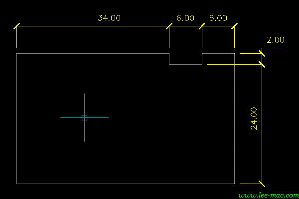

Dimension Overlap
This page is delivered for consistency purposes only, as part of the LeeMac sample module of DynALisp, which shows how DynALisp turns existing AutoLISP programs into a module. The program and its description are the work of Lee Mac, who keeps all the credit for them. The original page, with the latest version, is on Lee Mac's website: https://lee-mac.com/dimoverlap.html
| Function Syntax | LM-DimensionOverlap – original syntax: dimoverlap (see aliases) |
| Current Version | 1.3 |
| Compatible with AutoCAD for Mac? | No |
| Compatible with AutoCAD LT? | Yes |
| Original Page | lee-mac.com/dimoverlap.html |
Program Description
This program will automatically detect overlapping linear dimensions in either a selection or in all layouts and blocks in a drawing, and will move such dimensions to a separate layer specified in the code.
Upon issuing the command syntax dimoverlap at the AutoCAD command-line, the program will prompt the user for a selection of linear dimensions (rotated or aligned) to check; alternatively, the user may press ENTER at this prompt to automatically iterate over all linear dimensions (rotated or aligned) found in all layouts & blocks in the active drawing. The program will then test whether each dimension in the selection/drawing overlaps any other dimensions in the selection/drawing - note that this process may take some time to complete for large drawings.
Demonstration

Configuring Program Parameters
The following parameters are defined near the top of the program file and may be adjusted to suit the user's requirements:
;;----------------------------------------------------------------------;; ;; Program Parameters ;; ;;----------------------------------------------------------------------;; ;; Tolerance within which dimensions are deemed to overlap tol 0.01 ;; Layer properties for overlapping dimensions lay '( (002 . "DIMOVERLAP") ;; Layer Name (062 . 1) ;; Layer Colour (1-255) (006 . "Continuous") ;; Layer Linetype (Must be loaded in drawing) (370 . -3) ;; Layer Lineweight (Default = -3, else lineweight*100 e.g. 2.11 = 211) ) ;;----------------------------------------------------------------------;;
The tolerance parameter determines the number of drawing units within which dimensions are deemed to overlap. With the current configuration, if two dimensions are not located directly above each other, but are within 0.01 drawing units of each other, they will be tested for overlapping extension lines.
The subsequent list of layer properties defines the name of the layer to be assigned to overlapping dimensions and the list of properties which will be applied to such layer. This layer will be automatically created if not already present in the active drawing. Note that the linetype assigned to the layer must be already loaded in the active drawing.
Bundled program notes
;;-----------------------=={ Dimension Overlap }==----------------------;;
;; ;;
;; This program will automatically detect overlapping dimensions in ;;
;; all layouts and all blocks in a drawing, and will move such ;;
;; dimensions to a separate layer specified in the code. ;;
;;----------------------------------------------------------------------;;
;; Author: Lee Mac, Copyright © 2015 - www.lee-mac.com ;;
;;----------------------------------------------------------------------;;
;; Version 1.0 - 2015-12-12 ;;
;; ;;
;; - First release. ;;
;;----------------------------------------------------------------------;;
;; Version 1.1 - 2015-12-31 ;;
;; ;;
;; - dimoverlap:processblock function rewritten to detect dimensions ;;
;; which overlap on both sides. ;;
;;----------------------------------------------------------------------;;
;; Version 1.2 - 2017-04-25 ;;
;; ;;
;; - Added parameter to allow the user to alter the tolerance for ;;
;; dimension comparison. ;;
;; - Added list of layer properties to be applied to layer assigned ;;
;; to overlapping dimensions. ;;
;;----------------------------------------------------------------------;;
Command Names And Aliases
As in every DynALisp module, each program of this sample module has one main command, named LM-*, and the original command names of Lee Mac's page are kept as its aliases: they run the same command, and can be added, renamed or removed in Dyl-Suite (saved in Resources\Aliases.csv).
| Command | Aliases | Name |
|---|---|---|
| LM-DimensionOverlap | DIMOVERLAP | Dimension Overlap |